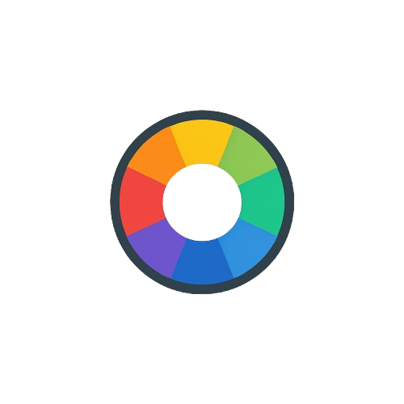

<!-- navbar.html: Reusable, responsive navbar component -->
<nav class="navbar">
  <div class="navbar-inner">
    <a href="index.html" class="navbar-logo">
      
      Colour Scheme Generator
    </a>
    <div class="navbar-links">
      <a href="index.html" class="navbar-link" data-page="home">Home</a>
      <a href="features.html" class="navbar-link" data-page="features"
        >Features</a
      >
      <a
        href="https://github.com/AdrianTze/colour-scheme-generator"
        target="_blank"
        >GitHub</a
      >
    </div>
  </div>
</nav>
<script src="navbar.js"></script>
